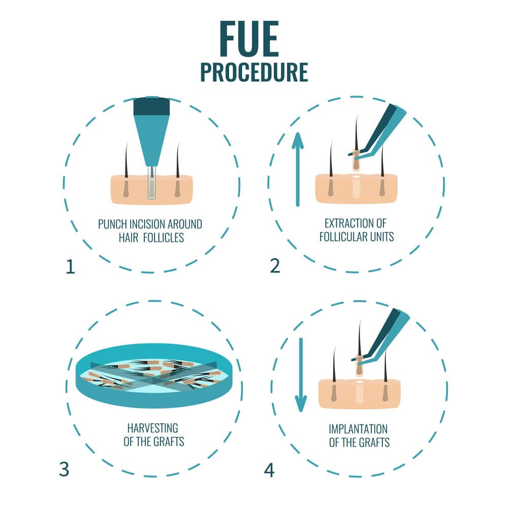

Hair Transplant Publications
Hair transplant is a cosmetic procedure used in recent years with painless and advanced techniques, it is done through the use of other donor areas of the body.

FUE hair transplantation in turkey reviews and cost
In this article, we will learn about hair transplantation in Turkey with the FUE technique, what are its advantages, how it is performed, in addition to the stages and the difference between them and other techniques.
Table of content
What is FUE hair transplantation?
Follicular Unit Extraction - known as FUE - is a type of hair transplantation, which is done by taking individual hair follicles from the donor site and transferring them to another part of the body; where the hair is lighter, or absent, this part is called the recipient site.
Surgeons use precise pricks to extract and transfer individual follicles, without leaving any scars.
Benefits of FUE hair transplant
- Less invasive
It is much less invasive than the FUT technique used previously, and this ensures that no scars appear in the donor area.
- It does not cause any scars
This technique does not leave any scars during the extraction of hair follicles from the donor area, and it is not used in hair transplantation of the head only, but also includes eyebrow, mustache, and beard transplantation effectively.
- More convenient
It is a method developed for those for whom traditional methods are not suitable.
- A large number of grafts can be transplanted
The FUE technique allows many follicles to be implanted in one session. On average, about five thousand follicles.
FUE hair transplant side effects long term
The main disadvantage of FUE is that the number of follicles that you can transplant is limited to the size and density of the donor area, and as a result, it often produces fewer follicles than FUT.
Follicles are also more prone to damage compared to FUT follicles and the quality of extraction matches the skill and experience of the surgeon.
FUE hair transplant recovery tips
Hair should be shampooed daily to remove scabs.
After 7-10 days, there will be no traces of dry blood or scabs on your scalp.
You can start washing your hair normally no later than 14 days after hair transplant , and if necessary, the hair can be washed more than once a day after the operation.
FUE hair transplant procedure step by step
- The first step: Consultation and preparation
At the beginning of the hair transplant procedure , patients sit for individual consultation with the specialist doctor.
It is important to carry out an individual evaluation for each case and to determine the optimal number of follicles to be transplanted, in addition to their location.
- The second step: Extraction of the follicles from the donor area
During this step, the surgeon uses a special tool to extract follicles from the patient's donor area. The follicles are traditionally extracted from the back and sides of the scalp.
- The third step: Preparing the follicles
During and after follicle extraction, our team takes effective measures to preserve the follicles for transplantation.
- Fourth step: Implantation
Once enough follicles are extracted, the specialist surgeon begins to implant them, and the accompanying team loads the individual follicles into the transplantation pens, one by one, and passes them to the surgeon.
- Fifth step: Post-operative care
After the main steps of hair transplantation are complete, it is important to follow the aftercare procedures correctly.
This includes washing the donor and recipient areas, protecting the transplanted follicles, avoiding excessive rubbing, impacts, and direct sunlight, and in Ilajak Medical we will determine - in agreement with the surgeon - a day for a medical follow-up to check your recovery, one day after the operation.
Read More : Is Hair Transplant possible without shaving?

FUE hair transplant cost in Turkey
Turkey is one of the lowest costs countries in the world in Hair Transplant, especially if compared to the European countries, and the costs of hair transplantation in Turkey vary according to many factors, including the used techniques, and in general, the cost of Hair Transplant in Turkey ranges from 1200 to 1500 USD.
FUE hair transplant Turkey reviews
Turkey is very well known in FUE hair transplant and other techniques as well due to the well-developed infrastructure and excellent experienced doctors and reasonable costs, at Ilajak Medical we combined all the factors to deliver our client the best experience ever.
FUE hair transplant turkey results
before and after hair transplantation Technique Sapphire Grafts Number 6000 Grafts After 18 Months Technique Sapphire perkut... Grafts Number 5500 Grafts After 12 Months Technique Sapphire perkut... Grafts Number 5500 Grafts After 18 Months Technique Sapphire Grafts Number 3000 Grafts After 12 Months Technique Sapphire Grafts Number 4500 Grafts After 18 Months before
before
 after
after
 before
before
 after
after
 before
before
 after
after
 before
before
 after
after
 before
before
 after
after
Read more : why is hair transplant cheap in turkey ?
FUE hair transplant vs DHI
The main difference between FUE and DHI is the method of follicle transplantation in the recipient rea.
During the FUE procedure, the surgeon implants the extracted follicles manually.
In the DHI technique, a specific implant device also known as a Choi Implanter Pen is used.
Moreover, FUE requires opening the canal before hair transplantation, while it is not needed with DHI.
The main differences between the technologies can be summarized in the table below:
|
DHI |
FUE |
|
Shorter and Faster recovery |
Longer and slower recovery |
|
Less bleeding |
More bleeding |
|
Better hair density |
Lower hair density |
|
Covers smaller area |
Covers larger area |
FUE hair transplant vs sapphire micro
The primary difference between FUE and traditional FUE is the use of sapphire blades instead of blades made of metal.
In addition to opening smaller channels compared to the metal blade channels, sapphire blades also help shortening the patient's healing time.
FUE hair transplant video
Ilajak Medical© | A passion for care.
Latest Articles, Health News, Clinical Research, and more.
Keratoconus and cataracts , symptoms and types
What is Keratoconus, How it looks and what are the symptoms? Also, find out Keratoconus’s types and stages , Learn more with ILAJAK Medical.
Best Spa Resorts with Medical Services clinics in Turkey.
In this article, we will learn about the importance of health resorts and the treatment services they offer and the top and famous health & medical resorts in Turkey
Zirconia teeth type and costs in Turkey 2021
Zirconia dental crowns and bridges are used to treat and protect the affected teeth due to decay or fractures, etc, In this article we will learn about the advantages and drawbacks of Zirconia Crowns and bridges
Benefits of porcelain teeth and costs in Turkey 2021
Porcelain crowns and veneers are used to strengthen and protect damaged teeth due to decay or cracks or any other reason. In this article, we will discover dental porcelain and its advantages and risks.